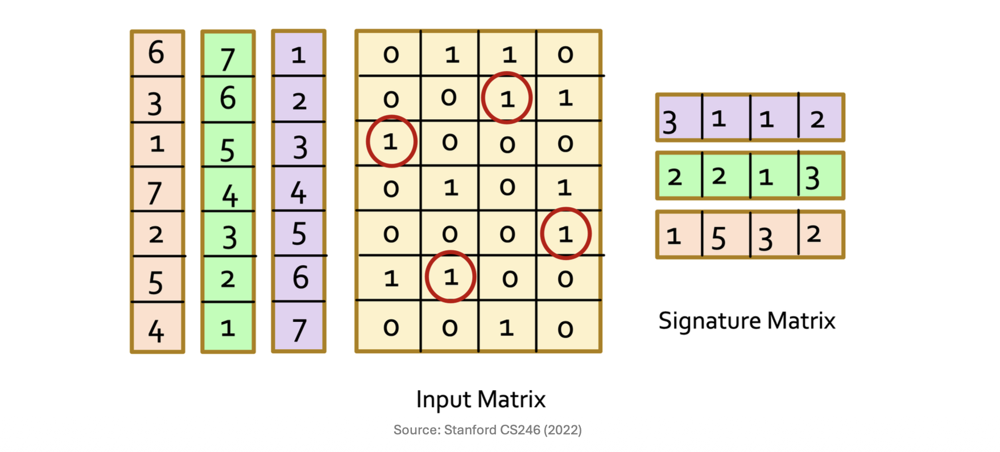

1. 유사도 보존 요약 (Similarity-Preserving Summaries)
이전 포스트에서 우리는 문서를 토큰들의 집합으로 만들고 이를 특성 행렬(Characteristic Matrix)로 표현했습니다. 하지만 수백만 개의 문서를 다룰 때, 이 특성 행렬은 크기가 너무 방대하고 극도로 희소(Sparse)해진다는 치명적인 문제가 발생합니다.
이 문제를 해결하기 위한 우리의 목표는 각각의 거대한 집합(열)을 훨씬 크기가 작은 표현 방식인 서명(Signature)으로 대체하는 것입니다. 서명을 사용하면 원본 집합을 직접 비교하지 않고도 두 서명을 비교하는 것만으로 자카드 유사도(Jaccard similarity)를 훌륭하게 추정할 수 있습니다.
원칙적으로 생성된 서명의 길이가 길어질수록(즉, 더 많은 해시 함수를 사용할수록) 원본 유사도에 대한 추정의 정확도는 더욱 높아집니다. 예를 들어, 방대한 텍스트로 이루어진 “Magnitude 6.8 earthquake” 관련 기사를 단 세 개의 정수로 이루어진
[110, 70, 93]과 같은 짧은 서명 벡터로 압축하는 것이 바로 이 단계의 핵심입니다.
2. 민해싱(Minhashing) 알고리즘
- 거대한 특성 행렬로부터 이 “서명”을 만들어내는 기법을 민해싱(Minhashing)이라고 부릅니다. Minhashing은 행렬의 열(Column) 방향이 아닌, 행(Row) 방향에 무작위성을 부여하여 값을 추출합니다.
2.1 Minhashing의 작동 방식
- 알고리즘의 동작 과정은 다음과 같습니다.
- 특성 행렬의 전체 행(Rows)에 대해 여러 번의 무작위 순열(Random permutations)을 적용하여 행의 순서를 섞습니다.
- 각각의 무작위 순열이 적용된 상태에서, 각 열(집합)을 위에서 아래로 스캔합니다.
- 각 열에 대해 처음으로 1이 등장하는 행의 인덱스(Index)를 해당 열의 Minhash 값으로 정의합니다.
- 이렇게 여러 개의 무작위 순열(해시 함수)을 적용하여 얻은 Minhash 값들을 모아 행렬로 구성한 것을 서명 행렬(Signature Matrix)이라고 합니다. 이 서명 행렬에서 열(Columns)은 원본과 동일하게 각 문서 집합을 나타내지만, 행(Rows)은 적용한 순열(해시)의 개수만큼만 존재하게 됩니다. 결과적으로 서명 행렬은 원본 특성 행렬보다 크기가 훨씬 작아져 메모리 효율성이 극대화됩니다.

2.2 주의할 점 (Subtle Point)
Minhash 값을 기록할 때, 순열이 적용된 상태에서의 “새로운 행 번호(Permuted order)”를 써야 하는지, 아니면 해당 행의 “원래 행 번호(Original number)”를 써야 하는지 헷갈릴 수 있습니다.
결론부터 말씀드리면, 어느 것을 사용해도 상관없습니다. 단지 어떤 방식을 택하든 일관성(Consistent)만 유지하면 됩니다. Minhashing이 정상적으로 작동하기 위한 유일한 조건은 “두 열(문서)이 순열 내에서 만나는 최초의 1이 완전히 동일한 행에 위치할 때만 같은 Minhash 값을 갖는다”는 사실이 보장되는 것이기 때문입니다.
3. Minhashing과 Jaccard 유사도의 관계 (핵심 증명)
- Minhashing이 데이터 마이닝에서 이토록 널리 쓰이는 이유는 다음과 같은 매우 놀라운 수학적 특성(Surprising property)을 가지고 있기 때문입니다.
정리: 두 집합에 대해 Minhash 값이 일치할 확률은 두 집합의 Jaccard 유사도와 정확히 일치한다. \[P(h(S_1) = h(S_2)) = Jaccard(S_1, S_2)\]
3.1 수학적 증명 (Proof)
임의의 두 열(문서) \(S_1\)과 \(S_2\)를 비교할 때, 특성 행렬의 모든 행은 다음 세 가지 유형 중 하나로 분류할 수 있습니다.
- Type X: 두 열 모두에서 값이
1인 행. - Type Y: 한 열은
1, 다른 열은0인 행 (또는 그 반대). - Type Z: 두 열 모두에서 값이
0인 행.
- Type X: 두 열 모두에서 값이
Type X에 해당하는 행의 개수를 \(x\), Type Y에 해당하는 행의 개수를 \(y\)라고 가정해 봅시다. 자카드 유사도는 “합집합에 대한 교집합의 비율”입니다. Type Z는 두 문서 어디에도 없는 토큰이므로 합집합과 교집합 계산에서 모두 제외됩니다. 따라서 두 문서의 실제 Jaccard 유사도는 \(x / (x + y)\)가 됩니다.
이제 Minhash 값이 일치할 확률을 계산해 봅시다.
무작위로 행의 순서를 섞은 뒤 위에서부터 스캔하여 처음으로 1을 만나는 순간을 생각해 보세요. Minhash 값이 같으려면, 처음 만나는 1이 “둘 다 1을 가진” Type X 행이어야 합니다. 만약 Type Y 행을 먼저 만난다면, 하나는 1이고 다른 하나는 0이므로 두 열의 Minhash 값은 달라지게 됩니다.
즉, \(P(h(S_1) = h(S_2))\)는 무작위 스캔 중에 Type Y 행보다 Type X 행을 먼저 만날 확률과 같습니다. 무작위 순열이므로 총 \(x + y\)개의 행이 첫 번째로 등장할 확률은 모두 동일합니다. 따라서 전체 \(x + y\)개의 행 중에서 Type X 행(\(x\)개)이 제일 먼저 뽑힐 확률은 Jaccard 유사도와 동일한 \(x / (x + y)\)가 됩니다.
4. 서명 유사도 (Similarity of Signatures)
- 위의 증명에 따라, 생성된 서명(Signatures) 간의 유사도를 구하면 원본 집합의 Jaccard 유사도를 근사할 수 있습니다.
- 서명 유사도: 두 서명 벡터를 비교하여 동일한 값을 가지는 행의 비율(Fraction of the same rows)을 계산합니다.
- 두 서명의 유사도에 대한 기댓값(Expected similarity)은 그 서명들이 나타내는 원본 집합 간의 Jaccard 유사도와 같습니다.
4.1 실제 예제 비교 (Example)
- 강의 자료에 등장하는 행렬을 통해 원본 Jaccard 유사도와 서명 유사도를 직접 비교해 봅시다.
| 비교 대상 (Columns) | 원본 Jaccard 유사도 | 서명 유사도 (Signature Sim) |
|---|---|---|
| Col 1 & Col 2 | \(1/4\) | \(1/3\) |
| Col 2 & Col 3 | \(1/5\) | \(1/3\) |
| Col 3 & Col 4 | \(1/5\) | \(0\) |
- 단 3개의 순열만 사용하여 서명을 만들었기 때문에, \(1/4 \approx 1/3\), \(1/5 \approx 0\) 처럼 약간의 오차(Error)가 존재함을 볼 수 있습니다. 하지만 이는 표본이 작기 때문이며, 통계학의 대수의 법칙에 따라 서명의 길이(해시 함수의 개수)를 늘릴수록 기대 오차는 작아지며 원본 Jaccard 유사도에 수렴하게 됩니다.